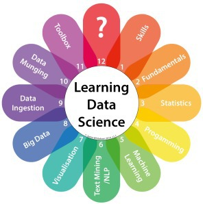

Data science career panel
NYC Data Science Study Group, July 5, 2016
Key takeaways:
- What does a data scientist do?
- How do companies find candidates?
- What are companies looking for when hiring a data scientist?
Data science career panel
NYC Data Science Study Group, July 5, 2016
|
Evan Estola, Lead machine learning engineer at Meetup |
Brad Willard, Data science engineer at Squarespace |
Steven Wood, Technical recruiter at Squarespace |
|
Kristian Kaufmann, Data lead at Vimeo |

Samer Zaben, Senior technical recruiter at Vimeo |
Eric Xu (moderator), Data engineer at Outbrain |
The Data Science Venn Diagram

- Drew Conway